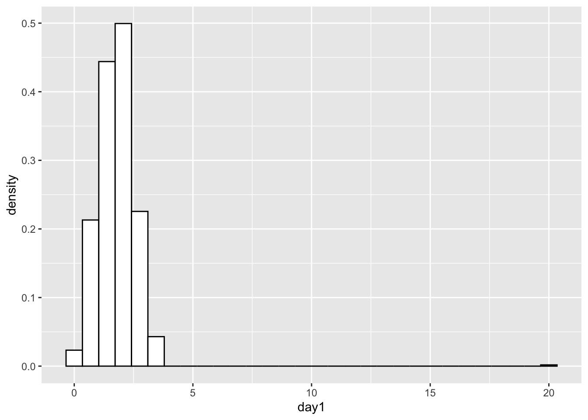

Chapter 7 Tests of Normality and Equality of Variance
Add and activate packages. NOTE THE NEW FUNCTION to install all packages ONLY IF Needed…..pacman::p_load(car, pastecs, psych, ggplot2)
## Rows: 810 Columns: 5
## ── Column specification ───────────────────────────
## Delimiter: ","
## chr (1): gender
## dbl (4): ticknumb, day1, day2, day3
##
## ℹ Use `spec()` to retrieve the full column specification for this data.
## ℹ Specify the column types or set `show_col_types = FALSE` to quiet this message.## # A tibble: 6 × 5
## ticknumb gender day1 day2 day3
## <dbl> <chr> <dbl> <dbl> <dbl>
## 1 2111 Male 2.64 1.35 1.61
## 2 2229 Female 0.97 1.41 0.29
## 3 2338 Male 0.84 NA NA
## 4 2384 Female 3.03 NA NA
## 5 2401 Female 0.88 0.08 NA
## 6 2405 Male 0.85 NA NA7.0.0.1 Understanding the data
- METADATA
The data is from a festival in UK. The data is about the hygiene score of the participants. The hygiene score is a score from 0 to 4.
The scale is as follows:
- 0 = You smell like a rotting corpse
- 4 = You smell like of sweet roses
Multiple variables
#Two alternative ways to describe multiple variables.
psych::describe(cbind(dlf$day1, dlf$day2, dlf$day3))## vars n mean sd median trimmed mad min max range skew kurtosis se
## X1 1 810 1.79 0.94 1.79 1.77 0.70 0.02 20.02 20.00 8.83 168.97 0.03
## X2 2 264 0.96 0.72 0.79 0.87 0.61 0.00 3.44 3.44 1.08 0.76 0.04
## X3 3 123 0.98 0.71 0.76 0.90 0.61 0.02 3.41 3.39 1.01 0.59 0.06## vars n mean sd median trimmed mad min max range skew kurtosis se
## day1 1 810 1.79 0.94 1.79 1.77 0.70 0.02 20.02 20.00 8.83 168.97 0.03
## day2 2 264 0.96 0.72 0.79 0.87 0.61 0.00 3.44 3.44 1.08 0.76 0.04
## day3 3 123 0.98 0.71 0.76 0.90 0.61 0.02 3.41 3.39 1.01 0.59 0.067.1 Shapiro-Wilk normality test
Test of normality, Shapiro Wilks Test is a test of normality in frequentist statistics. It tests the null hypothesis that the data was drawn from a normal distribution. The test is based on the correlation between the data and the corresponding normal scores. The test is considered to be the most powerful test for normality, particularly for small sample sizes. However it is sensitive to the presence of outliers. and tends to be conservative when the sample size is large. in other words it tends to reject the null model when sample size are large and the data is sufficient normal.
library(pastecs)
stat.desc(dlf$day3, basic = FALSE, norm = TRUE) # "norm=TRUE"" is to calculate the Shapiro Wilk Test## median mean SE.mean CI.mean.0.95 var std.dev
## 7.600000e-01 9.765041e-01 6.404352e-02 1.267805e-01 5.044934e-01 7.102770e-01
## coef.var skewness skew.2SE kurtosis kurt.2SE normtest.W
## 7.273672e-01 1.007813e+00 2.309035e+00 5.945454e-01 6.862946e-01 9.077516e-01
## normtest.p
## 3.804486e-07## V1 V2 V3
## median 1.790000e+00 7.900000e-01 7.600000e-01
## mean 1.793358e+00 9.609091e-01 9.765041e-01
## SE.mean 3.318617e-02 4.436095e-02 6.404352e-02
## CI.mean.0.95 6.514115e-02 8.734781e-02 1.267805e-01
## var 8.920705e-01 5.195239e-01 5.044934e-01
## std.dev 9.444949e-01 7.207801e-01 7.102770e-01
## coef.var 5.266627e-01 7.501022e-01 7.273672e-01
## skewness 8.832504e+00 1.082811e+00 1.007813e+00
## skew.2SE 5.140707e+01 3.611574e+00 2.309035e+00
## kurtosis 1.689671e+02 7.554615e-01 5.945454e-01
## kurt.2SE 4.923139e+02 1.264508e+00 6.862946e-01
## normtest.W 6.539142e-01 9.083191e-01 9.077516e-01
## normtest.p 1.545986e-37 1.281630e-11 3.804486e-077.2 The shapiro-Francia normality test
The Shapiro-Francia test is known to perform well, see also the comments by Royston (1993). The expected ordered quantiles from the standard normal distribution are approximated by qnorm(ppoints(x, a = 3/8)), being slightly different from the approximation qnorm(ppoints(x, a = 1/2)) used for the normal quantile-quantile plot by qqnorm for sample sizes greater than 10.
Royston, P. (1993): A pocket-calculator algorithm for the Shapiro-Francia test for non-normality: an application to medicine. Statistics in Medicine, 12, 181–184.
Thode Jr., H.C. (2002): Testing for Normality. Marcel Dekker, New York.
##
## Shapiro-Francia normality test
##
## data: dlf$day3
## W = 0.90903, p-value = 2.348e-067.3 Anderson-Darling normality test
The Anderson-Darling test is a modification of the Kolmogorov-Smirnov test that gives more weight to the tails of the distribution. It is a more powerful test than the Kolmogorov-Smirnov test, but it is also more sensitive to departures from normality in the center of the distribution.
Stephens, M.A. (1986): Tests based on EDF statistics. In: D’Agostino, R.B. and Stephens, M.A., eds.: Goodness-of-Fit Techniques. Marcel Dekker, New York.
Thode Jr., H.C. (2002): Testing for Normality. Marcel Dekker, New York.
##
## Anderson-Darling normality test
##
## data: dlf$day1
## A = 15.406, p-value < 2.2e-167.4 Cramer-von Mises test of normality
The Cramer-von Mises test is a modification of the Anderson-Darling test that gives more weight to the center of the distribution. It is a more powerful test than the Anderson-Darling test, but it is also more sensitive to departures from normality in the tails of the distribution.
Stephens, M.A. (1986): Tests based on EDF statistics. In: D’Agostino, R.B. and Stephens, M.A., eds.: Goodness-of-Fit Techniques. Marcel Dekker, New York.
Thode Jr., H.C. (2002): Testing for Normality. Marcel Dekker, New York.
## Warning in cvm.test(dlf$day1): p-value is smaller than 7.37e-10, cannot be
## computed more accurately##
## Cramer-von Mises normality test
##
## data: dlf$day1
## W = 1.9628, p-value = 7.37e-107.5 Lilliefors test of normality
The Lilliefors (Kolomorov-Smirnov) test is the most famous EDF omnibus test for normality. Compared to the Anderson-Darling test and the Cramer-von Mises test it is known to perform worse. Although the test statistic obtained from lillie.test(x) is the same as that obtained from ks.test(x, “pnorm”, mean(x), sd(x)), it is not correct to use the p-value from the latter for the composite hypothesis of normality (mean and variance unknown), since the distribution of the test statistic is different when the parameters are estimated.
Dallal, G.E. and Wilkinson, L. (1986): An analytic approximation to the distribution of Lilliefors’ test for normality. The American Statistician, 40, 294–296.
Stephens, M.A. (1974): EDF statistics for goodness of fit and some comparisons. Journal of the American Statistical Association, 69, 730–737.
Thode Jr., H.C. (2002): Testing for Normality. Marcel Dekker, New York.
##
## Lilliefors (Kolmogorov-Smirnov) normality test
##
## data: dlf$day1
## D = 0.082706, p-value = 2.539e-147.6 Visualizing the data
7.6.1 qq-plot
Add a straight line on the qqplot
# This function is to add a straight line through the qqplot
qqplot.data <- function (vec) # argument: vector of numbers
{
# following four lines from base R's qqline()
y <- quantile(vec[!is.na(vec)], c(0.25, 0.75))
x <- qnorm(c(0.25, 0.75))
slope <- diff(y)/diff(x)
int <- y[1L] - slope * x[1L]
d <- data.frame(resids = vec)
ggplot(d, aes(sample = resids)) +
stat_qq() +
geom_abline(slope = slope, intercept = int, color="red")
}
qqplot.data(dlf$day3)## Warning: Removed 687 rows containing non-finite outside the
## scale range (`stat_qq()`).## Saving 7 x 5 in image## Warning: Removed 687 rows containing non-finite outside the
## scale range (`stat_qq()`).7.6.2 Histogram
## # A tibble: 6 × 5
## ticknumb gender day1 day2 day3
## <dbl> <chr> <dbl> <dbl> <dbl>
## 1 2111 Male 2.64 1.35 1.61
## 2 2229 Female 0.97 1.41 0.29
## 3 2338 Male 0.84 NA NA
## 4 2384 Female 3.03 NA NA
## 5 2401 Female 0.88 0.08 NA
## 6 2405 Male 0.85 NA NA## # A tibble: 6 × 5
## ticknumb gender day1 day2 day3
## <dbl> <chr> <dbl> <dbl> <dbl>
## 1 4749 Female 0.52 NA NA
## 2 4756 Female 2.91 0.94 NA
## 3 4758 Female 2.61 1.44 NA
## 4 4759 Female 1.47 NA NA
## 5 4760 Male 1.28 NA NA
## 6 4765 Female 1.26 NA NAhist.day1 <- ggplot(dlf, aes(day1)) +
geom_histogram(aes(y=..density..), colour="black", fill="white")
hist.day1+
labs(x="Hygiene score on day 1", y = "Density")## Warning: The dot-dot notation (`..density..`) was
## deprecated in ggplot2 3.4.0.
## ℹ Please use `after_stat(density)` instead.
## This warning is displayed once every 8 hours.
## Call `lifecycle::last_lifecycle_warnings()` to see
## where this warning was generated.## `stat_bin()` using `bins = 30`. Pick better value
## with `binwidth`.
## `stat_bin()` using `bins = 30`. Pick better value
## with `binwidth`.
ggsave("histogram_festival_hygiene.pdf") # Can be either be a device function (e.g. png()), or one of "eps", "ps", "tex" (pictex), "pdf", "jpeg", "tiff", "png", "bmp", "svg" or "wmf" (windows only)## Saving 7 x 5 in image
## `stat_bin()` using `bins = 30`. Pick better value
## with `binwidth`.7.6.3 Density plot
The Normal Distribution
https://en.wikipedia.org/wiki/Normal_distribution
- visualization if the observed distribution follows a theoretical normal distribution
- Test to determine if the observed distribution follows a theoretical distribution
\[P(x)=\frac{1}{{\sigma\sqrt{ 2\pi}}}{e}^{\frac{{(x-µ)}^{2}}{{2\sigma}^{2}}}\]
# Add a line to represent the normal distrubution
hist.day1 +
stat_function(fun = dnorm,
args = list(mean = mean(dlf$day1,na.rm = TRUE),
sd = sd(dlf$day1 , na.rm = TRUE)),
colour = "blue", size = 1)## Warning: Using `size` aesthetic for lines was deprecated in
## ggplot2 3.4.0.
## ℹ Please use `linewidth` instead.
## This warning is displayed once every 8 hours.
## Call `lifecycle::last_lifecycle_warnings()` to see
## where this warning was generated.## `stat_bin()` using `bins = 30`. Pick better value
## with `binwidth`.##
## Shapiro-Wilk normality test
##
## data: dlf$day1
## W = 0.65391, p-value < 2.2e-16## [1] 810Visualize the distribution of the data “Histogram”
7.7 Remove the outlier from the day1 hygiene score
dlf\(day1 <- ifelse(dlf\)day1 > 5, NA, dlf\(day1) df\)Column = ifelse(df$column_to_be evaluated, replace_with_NA, otherwise_leave_as_before)
dlf$day1 <- ifelse(dlf$day1 > 5, NA, dlf$day1)
# Note here that we use ..density.. # What is the difference between ..density.. and frequency?
hist.day1 <- ggplot(dlf, aes(day1)) +
theme(legend.position = "none") +
geom_histogram(aes(y=..density..), colour="black", fill="white") +
labs(x="Hygiene score on day 1", y = "Density")
hist.day1## `stat_bin()` using `bins = 30`. Pick better value
## with `binwidth`.## Warning: Removed 1 row containing non-finite outside the
## scale range (`stat_bin()`).
dlf=DownloadFestival
#Quantifying normality with numbers
library(psych) #load the "psych" library, if you haven't already, for the describe() function.
#Using the describe() function for a single variable.
psych::describe(dlf$day2)## vars n mean sd median trimmed mad min max range skew kurtosis se
## X1 1 264 0.96 0.72 0.79 0.87 0.61 0 3.44 3.44 1.08 0.76 0.047.8 What is the mode?
The mode is the value that appears most frequently in a data set. A set of data may have one mode, more than one mode, or no mode at all. The mode is one of the measures of CENTRAL TENDENCIES.
The package modeest has many functions to evaluate modes.
Note that in two of the data sets there are no SINGLE most common values, then it result that is return is NA.
## Registered S3 method overwritten by 'rmutil':
## method from
## plot.residuals psych## [1] 2## [1] NA## [1] NA7.9 Test of normality, Shapiro Wilks Test
library(pastecs)
stat.desc(dlf$day3, basic = FALSE, norm = TRUE) # "norm=TRUE"" is to calculate the Shapiro Wilk Test## median mean SE.mean CI.mean.0.95 var std.dev
## 7.600000e-01 9.765041e-01 6.404352e-02 1.267805e-01 5.044934e-01 7.102770e-01
## coef.var skewness skew.2SE kurtosis kurt.2SE normtest.W
## 7.273672e-01 1.007813e+00 2.309035e+00 5.945454e-01 6.862946e-01 9.077516e-01
## normtest.p
## 3.804486e-07We can evaluate the normality of multiple variables at the same time using the following code:
Note here we use [,], where the inside the square brackets we specify the variables we want to evaluate. Before the comma, we specify the rows we want to evaluate and after the comma, we specify the columns we want to evaluate.
## day1 day2 day3
## median 1.7900 0.7900 0.7600
## mean 1.7934 0.9609 0.9765
## SE.mean 0.0332 0.0444 0.0640
## CI.mean.0.95 0.0651 0.0873 0.1268
## var 0.8921 0.5195 0.5045
## std.dev 0.9445 0.7208 0.7103
## coef.var 0.5267 0.7501 0.7274
## skewness 8.8325 1.0828 1.0078
## skew.2SE 51.4071 3.6116 2.3090
## kurtosis 168.9671 0.7555 0.5945
## kurt.2SE 492.3139 1.2645 0.6863
## normtest.W 0.6539 0.9083 0.9078
## normtest.p 0.0000 0.0000 0.00007.10 Tests of Equality of variances
Most parametric test require that when testing differences among groups, these have more or less the same variance around the mean.
The Levene’s test is a test of the null hypothesis that the variances in the different groups are equal. The test is based on the absolute deviations of the observations from the group means. The test is considered to be robust against departures from normality, but it is sensitive to the presence of outliers.
7.10.1 The F-test of equality of variance
The F-test is a test of the null hypothesis that the variances in the different groups are equal. The test is based on the ratio of the variances in the different groups. This test is EXTREMELY sensitive to non-normality and outliers. Consequently the F-test is considered to be less robust than the Levene’s test, Bartlett’s test or the Brown-Forsythe test. It is NOT recommended to use the F-test for testing the equality of variances.
Sokal, R. R., Rohlf, F. J. (1995). Biometry: The Principles and Practice of Statistics in Biological Research. W. H. Freeman and Company
\[F=s_x^2/s_y^2\], where \(s_x^2\) and \(s_y^2\) are the variances of the two groups, and x is the variance of the group with the larger variance.
##
## F test to compare two variances
##
## data: dlf$day1 and dlf$day2
## F = 1.7171, num df = 809, denom df = 263, p-value = 3.23e-07
## alternative hypothesis: true ratio of variances is not equal to 1
## 95 percent confidence interval:
## 1.402898 2.080705
## sample estimates:
## ratio of variances
## 1.7170927.10.2 Bartlett’s test of equality of variance
Bartlett’s test is a test of the null hypothesis that the variances in the different groups are equal. The test is based on the absolute deviations of the observations from the group means. The test is considered to be robust against departures from normality, but it is sensitive to the presence of outliers.
Bartlett, M. S. (1937). Properties of sufficiency and statistical tests. Proceedings of the Royal Society of London Series A 160, 268–282. doi:10.1098/rspa.1937.0109.
Note: that the data needs to be manipulated so it appear in the long form
subset(dlf, select = c("day1", "day2")) -> dlfsub # create a subset of the data
dlfsub1 <- stack(dlfsub) # reorganize the data in the long form
head(dlfsub1) # the data is now in the long form## values ind
## 1 2.64 day1
## 2 0.97 day1
## 3 0.84 day1
## 4 3.03 day1
## 5 0.88 day1
## 6 0.85 day1##
## Bartlett test of homogeneity of variances
##
## data: values by ind
## Bartlett's K-squared = 26.273, df = 1, p-value = 2.964e-077.10.3 Brown-Forsythe test of equality of variance
The Brown-Forsythe test is a test of the null hypothesis that the variances in the different groups are equal. The test is based on the absolute deviations of the observations from the group medians. The test is considered to be robust against departures from normality and outliers.
Brown, M. B., Forsythe. A. B. (1974a). The small sample behavior of some statistics which test the equality of several means. Technometrics, 16, 129-132.
Dag, O., Dolgun, A., Konar, N.M. (2018). onewaytests: An R Package for One-Way Tests in Independent Groups Designs. The R Journal, 10:1, 175-199.
##
## Attaching package: 'onewaytests'## The following object is masked from 'package:psych':
##
## describe##
## Brown-Forsythe Test (alpha = 0.05)
## -------------------------------------------------------------
## data : values and ind
##
## statistic : 225.7812
## num df : 1
## denom df : 580.6262
## p.value : 2.392677e-43
##
## Result : Difference is statistically significant.
## -------------------------------------------------------------7.10.4 Levene’s Test: testing for assumption of equality of variance among groups
Levene’s test is a test of the null hypothesis that the variances in the different groups are equal. The test is based on the absolute deviations of the observations from the group means. The test is considered to be robust against departures from normality, but it is sensitive to the presence of outliers.
## Warning in leveneTest.default(dlf$day1, dlf$day2): dlf$day2 coerced to factor.## Levene's Test for Homogeneity of Variance (center = median)
## Df F value Pr(>F)
## group 101 11.661 < 2.2e-16 ***
## 162
## ---
## Signif. codes: 0 '***' 0.001 '**' 0.01 '*' 0.05 '.' 0.1 ' ' 1ANOTHER alternative Levene’s test
#Levene's test for comparison of variances of exam scores in the two universities.
library(ggplot2)
library(car)
library(readr)
RExam <- read_csv("Data/RExam.csv")## Rows: 100 Columns: 5
## ── Column specification ───────────────────────────
## Delimiter: ","
## dbl (5): exam, computer, lectures, numeracy, uni
##
## ℹ Use `spec()` to retrieve the full column specification for this data.
## ℹ Specify the column types or set `show_col_types = FALSE` to quiet this message.## # A tibble: 6 × 5
## exam computer lectures numeracy uni
## <dbl> <dbl> <dbl> <dbl> <dbl>
## 1 18 54 75 7 0
## 2 30 47 8.5 1 0
## 3 40 58 69.5 6 0
## 4 30 37 67 6 0
## 5 40 53 44.5 2 0
## 6 15 48 76.5 8 0## `stat_bin()` using `bins = 30`. Pick better value
## with `binwidth`.
## Warning in leveneTest.default(rexam$lectures, rexam$uni, center = median):
## rexam$uni coerced to factor.## Levene's Test for Homogeneity of Variance (center = median)
## Df F value Pr(>F)
## group 1 1.4222 0.2359
## 98## Warning in leveneTest.default(rexam$lectures, rexam$uni, center = mean):
## rexam$uni coerced to factor.## Levene's Test for Homogeneity of Variance (center = mean)
## Df F value Pr(>F)
## group 1 1.7306 0.1914
## 98